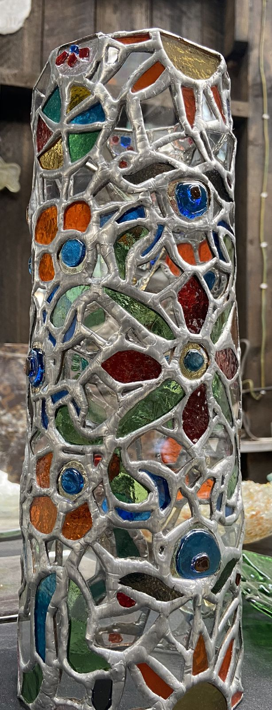

Three stories, one question: what is the system underneath?

Nakshi GlassIn progress
An artisan business built on craft and relationships. How does it grow without depending on one person’s memory?
Read the story
Customer information, pricing logic, demand generation and business development were not yet operating as a connected system. The opportunity is to add structure without stripping away what makes the business valuable.
- Customer and business data
- Pricing and value
- B2B and B2C growth
- Digital presence
- CRM and reporting
The aim isn’t to turn an artisan business into a machine. It’s to build enough structure around the craft that it can grow without losing its identity.
Sandstorm Kenya
Connecting brand communication with commercial activity.
54% increase in customer engagement
Read the story
Content, community and campaign reporting for a luxury fashion and textile brand, alongside Shopify updates and brand activations such as workshops and factory tours. I contributed to the engagement increase, and the work pushed me past producing content toward the commercial questions underneath it: who are we reaching, why would they care, and what happens after they engage?
Cytonn Investments
Translating financial products into visuals people could understand quickly.
Read the story
Campaign design, photography, video and financial product communication inside a financial services business. Creative work becomes more valuable when it is connected to what the organisation is actually trying to achieve, which is part of what pushed me toward business, data and strategy.
Personal projects
Data and analytics work I’m building alongside my training.
PPB Registry Analysis
Case write-up in progress.
Employee Attrition Dashboard
Case write-up in progress.
Currently building
Excel · SQL / MySQL · Power BI · AI-assisted analysis